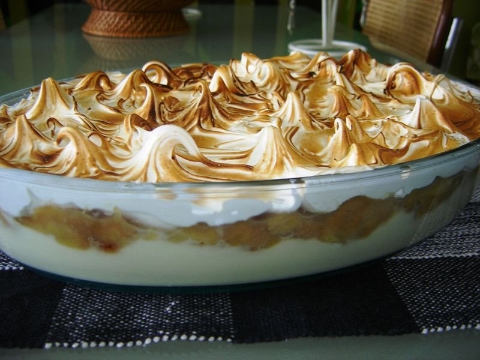

Pudim Sorvete de Chocolate e Morango

Essa sobremesa é deliciosa e combina a doçura das bananas caramelizadas com a cremosidade do creme e a leveza do merengue.
Aproveite.
Ingredientes:
- Para o doce de Banana:
- 8 bananas maduras
- 1 xícara de chá de açúcar
- Para o creme:
- 1 litro de leite
- 1 lata de leite condensado
- 3 gemas
- 2 colheres de sopa de amido de milho
- 1 colher de chá de essência de baunilha
- Para o merengue:
- 3 claras
- 6 colheres de sopa de açúcar
Modo de preparo:
-
Doce de Banana:
- Descasque e corte as bananas em rodelas.
- Em uma panela, coloque o açúcar e leve ao fogo médio, mexendo sempre até derreter e caramelizar.
- Adicione as bananas cortadas e cozinhe até ficarem macias e incorporadas ao caramelo.
- Distribua o doce de banana no fundo de uma bacia de vidro e reserve.
-
Creme:
- Em uma panela, misture o leite, o leite condensado, as gemas e o amido de milho.
- Leve ao fogo médio, mexendo sempre até engrossar e obter um creme liso.
- Adicione a essência de baunilha e misture bem.
- Despeje o creme sobre o doce de banana na bacia de vidro
-
Merengue:
- Bata as claras em neve até ficarem firmes.
- Adicione o açúcar aos poucos, batendo continuamente, até obter um merengue brilhante e consistente.
- Espalhe o merengue sobre o creme na bacia, formando picos com a ajuda de uma colher.
-
Finalização:
- Leve a bacia ao forno preaquecido a 180°C por cerca de 10 minutos, ou até o merengue dourar levemente.
- Retire do forno e deixe esfriar.
- Sirva gelado